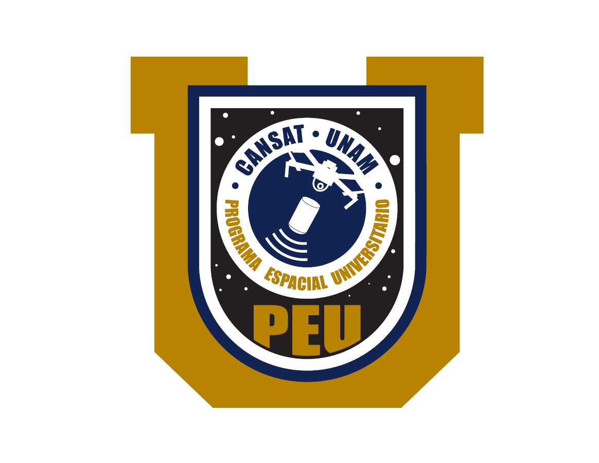
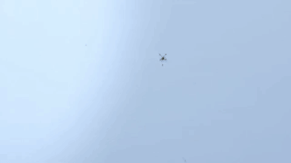

Satélites Enlatados
Descripción
Un satélite enlatado, o cansat, es un dispositivo electromecánico cuyo principal objetivo es simular los componentes de un satélite real; como su nombre lo indica, sus elementos están integrados dentro de un volumen y una geometría de dimensiones aproximadas a las de una lata de refresco. Es importante aclarar que hasta ahora, ningún Satélite Enlatado ha sido puesto en órbita, y sus misiones consisten en lanzamientos desde alturas de algunos cientos de metros a algunas decenas de kilómetros, apoyados por cohetes, globos o vehículos aéreos no tripulados (VANT), para después ser puestos en funcionamiento durante su caída, ejecutando en este momento su misión.
Normalmente, los satélites enlatados están hechos con componentes electrónicos comerciales que no están hechos ni certificados para volar al espacio. La principal finalidad de estos dispositivos es educativa, por lo que sus elementos suelen ser accesibles para cualquier persona que desee aprender sobre tecnología espacial.

Dependiendo del objetivo con el que el Satélite Enlatado sea desarrollado, sus subsistemas pueden variar, pero principalmente tienen los siguientes elementos:
- Segmento de Vuelo (Satélite Enlatado o CanSat).
- Potencia. Generalmente este subsistema está conformado por una batería, paneles solares o algún tipo de generador y almacenador eléctrico, encargado de energizar la electrónica del Satélite Enlatado.
- Sensores. Son los componentes electrónicos encargados de medir magnitudes físicas y químicas; su cantidad y tipo dependen del objetivo de la misión que el Satélite Enlatado deba cumplir, entre los que se pueden contar la detección de cambios de presión, temperatura, componentes químicos del aire, etc.
- Estructura Mecánica. Está compuesta de la envolvente del Satélite Enlatado (carcasa), las formas de distribución y la sujeción de los componentes electrónicos, así como cualquier mecanismo de despliegue de componentes que pudiera requerir para cumplir su misión.
- Control y Procesamiento de Datos. Se trata de la computadora que recaba los datos obtenidos por los sensores, para posteriormente redirigirlos a los elementos de transmisión de información, o bien, almacenarlos para su posterior recuperación.
- Transmisión de Datos. Consiste en el subsistema encargado de transmitir la información recabada por el Satélite Enlatado a la Estación Terrena
- Segmento en Tierra (computadora con un software de recepción y procesamiento de datos).
- Estación Terrena. Este elemento es con el que los operadores del Satélite Enlatado reciben y procesan la información mediante un software que puede tener o no una interfaz gráfica; en algunos casos, también pueden transmitirle datos al Segmento de Vuelo.

Dentro de los objetivos didácticos de los satélites enlatados, está el poner en práctica los puntos más importantes de las metodologías de gestión y ejecución de misiones espaciales, que incluyen la definición de los objetivos de la misión, diseño y construcción del Satélite Enlatado, su lanzamiento, despliegue desde el lanzador, ejecución de la misión y recabado de datos durante su caída, procesamiento de los datos obtenidos, y la presentación de los resultados.
No existe una clasificación formal para designar los tipos de satélites enlatados, pero se pueden generalizar de acuerdo al objetivo que han de cumplir, por ejemplo:
- Rover-back. Una vez que el Satélite Enlatado ha tocado tierra, de alguna manera se desplaza para alcanzar un punto geográfico definido.
- Fly-back. Durante su caída, el Satélite Enlatado controla su caída para alcanzar un punto geográfico definido como su objetivo.
- Descenso controlado. En este caso, el descenso puede incluir el requerimiento de controlar, además del punto en el que tocará tierra, la velocidad, posición o dinámica que deberá presentar durante su caída.
- Resistencia a impacto. Los Satélites Enlatados siempre deben estar diseñados para soportar los impactos resultantes de su caída. En algunas ocasiones, las misiones pueden incluir la supervivencia de elementos sensibles a movimientos bruscos o cualquier condición mecánica violenta, como pueden ser huevos, y es en estos casos donde se debe poner especial énfasis en el diseño estructural del dispositivo.
- Medición de parámetros atmosféricos. Esta suele ser la misión más común y sencilla de los Satélites Enlatados, que consistente en recabar datos de parámetros físicos y químicos de la atmósfera durante su caída.


La UNAM ha tenido actividades relacionadas con los Satélites Enlatados desde hace varios años; ejemplo de ello son las competencias CanSat organizadas por la Red Universitaria del Espacio entre 2013 y 2016, de las que se desprendieron las publicaciones de los mejores reportes realizados por los estudiantes que participaron:
A la fecha, el Programa Espacial Universitario ha organizado dos ediciones de un Concurso de Satélites Enlatados. Su primera edición, dirigida a estudiantes de nivel bachillerato y licenciatura de la UNAM, se realizo entre finales del 2017, y mediados del 2018; la segunda edición, que actualmente está en marcha, es a nivel Nacional e incluye la participación de estudiantes de nivel licenciatura y posgrado de instituciones educativas de todo el país.